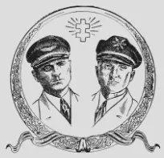

--------- Informacje ---------
---17.04.2023--------
Aktualizacja strony -
rezygnacja z php.
---17.04.2017--------
Zmiana serwera i adresu.
---17.04.2015--------
Wielka rozbudowa strony.
---13.07.2009--------
Zmiana wyglądu strony - optymalizacja.
---06.02.2004--------
Zalążek strony.
SN0LOT
2013rok

W dniach 13-14 lipca 2013r. w Pszczelniku koło Myśliborza odbył się Zlot krótkofalowców
"PSZCZELNIK 2013". Myśliborski Klub SP1PMY dla upamiętnienia 80 rocznicy przelotu przez
Atlantyk litewskich lotników Dariusa i Girenasa, którzy tragicznie zginęli w lesie pod
Pszczelnikiem. Zlot obfitował w wiele ciekawych atrakcji dla krótkofalowców i nie tylko.
Były wręczane dyplomy, losowanie upominków, wycieczka do muzeum, spływ kajakowy oraz jako
ciekawostka Certyfikat QLF tj. dla osób które posiadają umiejętność nadawania telegrafii
lewą nogą.
Oczywiście dzięki licznie przybyłym krótkofalowcom i sympatykom spotkanie było kolejnym momentem dla integracji środowiska. Drugiego dnia pod pomnikiem Dariusa i Girenasa odbyły się uroczystości upamiętniające tragiczną rocznicę, w której wzięła udział prezydent Litwy Pania Dalia Grybausjkaite. Impreza bardzo udana za rok wrócimy do Pszczelnika.
2012rok
W dniach 01 - 30 lipca 2012 roku pracowali pod okolicznościowym znakiem SN0LOT dla uczczenia wyczynu dwóch litewskich pilotów: Steponasa Dariusa i Stasysa Girenasa, którzy 15 lipca 1933 roku małym samolotem "Lituanica" wylecieli z Nowego Jorku do Kowna. Po pokonaniu 6411 km, z dotychczas niewyjaśnionych do końca przyczyn, 17 lipca 1933 roku samolot się rozbił w pobliżu miejscowości Pszczelnik koło Myśliborza. Lotnicy zgineli. Do Kowna zostało im 650 km. 8 lipca 2012 roku przed pomnikiem poległych Lotników odbyły się oficjalne uroczystości ku ich czci.
W tym dniu, tradycyjnie zainstalowano obok pomnika radiostację krótkofalową, która nadawała pod znakiem SN0LOT, po raz pierwszy pod znakiem klubowym SP1PMY, i jak co roku pieczę nad wszystkim trzymał Stefan SP1JJY. Nasz klub wspomógł sprzętem na KF, agregatem prądotwórczym no i swoimi osobami hihi.

{kind=link}
{kind=link}
{kind=link}
Proszę kliknac na dowolne zdjęcie- uruchomi się przeglądarka zdjęć.
Sławek SQ1KSM (Kwiecień 2013r.)
2011rok
{kind=link}
{kind=link}
{kind=link}
{kind=link}
Proszę kliknac na dowolne zdjęcie- uruchomi się przeglądarka zdjęć.
Sławek SQ1KSM (Kwiecień 2013r.)